Điểm KPI tính thế nào
Mỗi tuần tối đa 100 điểm, chia 3 nhóm. Nhóm nào đủ trần thì làm thêm việc của nhóm đó cũng không cộng nữa.
| Việc | Điểm |
|---|---|
| Chấm công vào đúng giờ Phát triển cá nhân · sáng đến hết 08:45 (08:46 là muộn), chiều 12:00 đến hết 13:45 · mỗi ngày tính 1 lần | +5 |
| Chấm công vào muộn Phát triển cá nhân | −5 |
| Dự đủ các buổi đào tạo bắt buộc trong tuần Phát triển cá nhân · chốt sau 23:00 Chủ nhật | +15 |
| Vắng có đơn được duyệt Phát triển cá nhân | −10 |
| Vắng không phép (không chấm công, không có đơn) Phát triển cá nhân · Chủ nhật không tính | −15 |
| Gặp khách Thực chiến · sau khi Admin duyệt | +10 |
| Hỗ trợ khách Thực chiến · sau khi Admin duyệt | +5 |
| Đào tạo 1-1 Thực chiến · sau khi Admin duyệt | +5 |
| Tăng ca: chấm công ra từ 20:00 Thực chiến · thứ Hai đến thứ Sáu | +5 |
| Bài đăng hoặc video được duyệt Lan tỏa | +5 |
| Gieo hạt: người bạn giới thiệu làm đủ 1 tháng Lan tỏa | +15 |
| Chốt căn được duyệt | Đạt 100% KPI tháng |
- Điểm mỗi nhóm không xuống dưới 0. Nhóm đang 0 điểm thì khoản trừ sẽ không trừ thêm.
- Tháng KPI tính theo tuần: cả tuần thuộc tháng của ngày thứ Hai đầu tuần. Ví dụ tuần 28/09–04/10 tính hết cho tháng 9. Tháng có 4 thứ Hai tối đa 400 điểm, 5 thứ Hai tối đa 500 điểm.
Bắt đầu
Đăng nhập một lần, app tự giữ đăng nhập cho những lần sau.
- Mở app, đăng nhập bằng số điện thoại và mật khẩu công ty cấp.
- Bấm biểu tượng ☰ góc trên bên trái để mở menu các mục.
- Biểu tượng chuông góc phải là Thông báo điểm. Số đỏ trên chuông là số khoản điểm mới chưa xem.
- Lần đầu dùng, nên vào Trang cá nhân → Đổi mật khẩu.
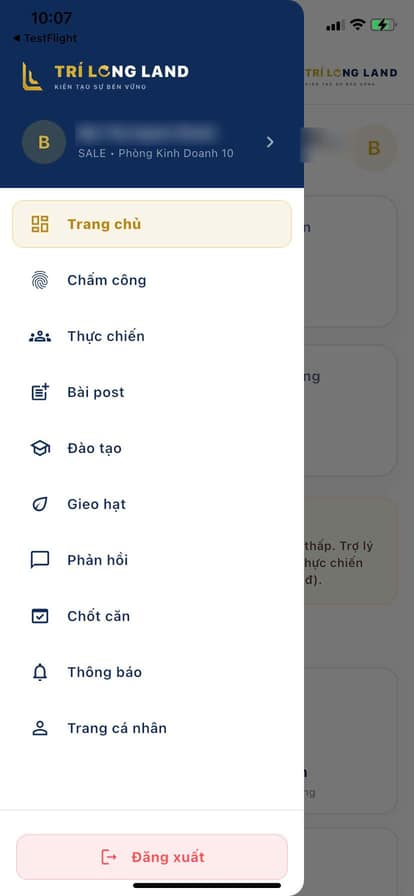
Chấm công vào / ra
Menu → Chấm công → tab CHẤM CÔNG.
- Chọn CHẤM CÔNG VÀO (nút xanh) khi đến, CHẤM CÔNG RA (nút đỏ) khi về.
- Chạm vào khung "Chạm để chụp ảnh xác thực". App mở camera trước, chụp rõ mặt, đủ sáng.
- Ghi chú công việc hôm nay nếu cần.
- Bấm XÁC NHẬN CHẤM CÔNG.
- Trong phạm vi văn phòng: ghi nhận ngay.
- Ngoài văn phòng (đi gặp khách, đi dự án): app hiện ô "Lý do đi thị trường". Ghi lý do rồi bấm GỬI YÊU CẦU XÉT DUYỆT. Lượt này chờ Admin duyệt.
- Đúng giờ: ca sáng chấm vào đến hết 08:45 (từ 08:46 là muộn), ca chiều từ 12:00 đến hết 13:45. Đúng giờ +5, muộn −5.
- Nhớ chấm công ra. Ngày chỉ có giờ vào hoặc chỉ có giờ ra chỉ được tính 0,5 công.
- Về từ 20:00 các ngày thứ Hai đến thứ Sáu, chấm công ra được tính tăng ca +5.
- Không dùng ứng dụng giả vị trí. App phát hiện sẽ chặn chấm công.
- Chụp ảnh khuôn mặt thật của mình, không chụp lại ảnh trên điện thoại khác. Admin sẽ từ chối các lượt như vậy.
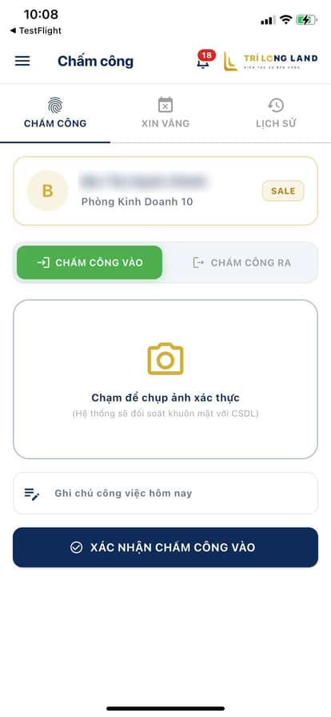
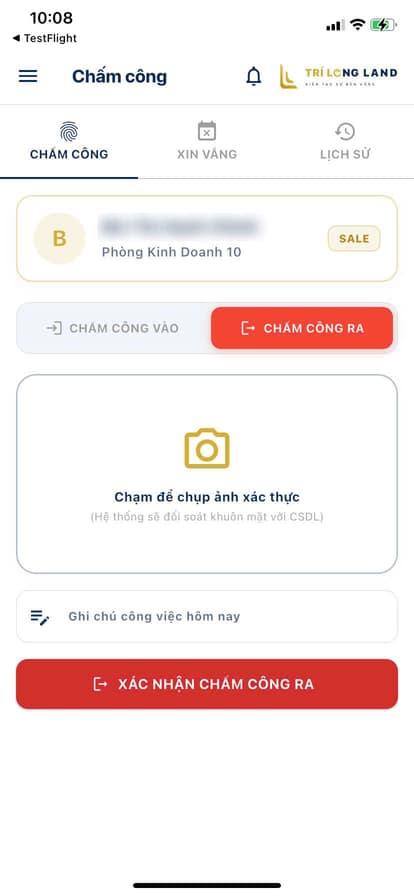
Xin vắng
Menu → Chấm công → tab XIN VẮNG. Gửi trước ngày nghỉ để Admin kịp duyệt.
- Chọn ngày xin vắng.
- Ghi lý do, ví dụ: nghỉ khám sức khỏe định kỳ.
- Bấm GỬI ĐƠN XIN VẮNG. Đơn đã gửi hiện ngay bên dưới cùng trạng thái duyệt.
- Đơn được duyệt: vắng có phép −10.
- Không chấm công và không có đơn: hệ thống tự ghi vắng không phép −15 vào cuối ngày.
- Chủ nhật không tính vắng.
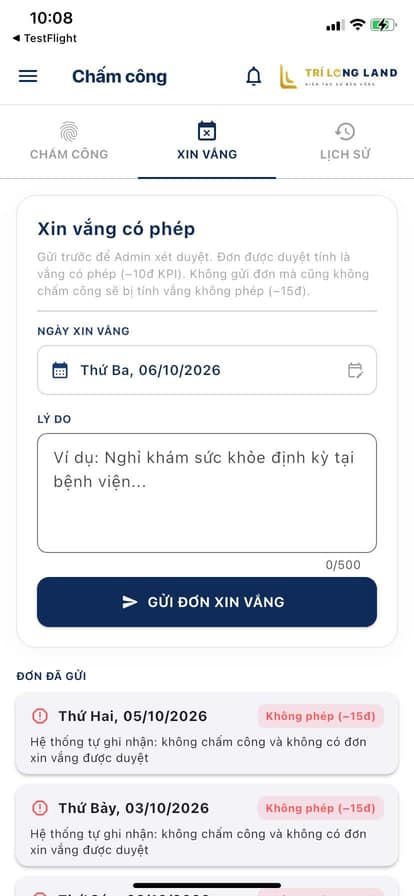
Xem lại lịch sử
Chấm công, Thực chiến, Bài post, Đào tạo, Chốt căn, Phản hồi đều có tab LỊCH SỬ.
- Mở tab LỊCH SỬ (hoặc LỊCH SỬ GỬI) của mục cần xem.
- Chọn Theo ngày để xem một ngày, hoặc Theo tháng để xem cả tháng. Ở chế độ tháng, bấm mũi tên ‹ › để đổi tháng. Danh sách chia theo từng ngày, ngày mới nhất ở trên.
- Mỗi mục có trạng thái: Đang chờ Đã duyệt Từ chối. Admin duyệt trên máy tính là app tự cập nhật, không cần thoát ra vào lại.
Thực chiến
Báo cáo mỗi lần gặp hoặc hỗ trợ khách. Admin duyệt mới cộng điểm.
- Chọn loại: Gặp khách +10 hoặc Hỗ trợ khách +5.
- Ghi nội dung trao đổi: nhu cầu của khách, thời gian hẹn tiếp theo…
- Chạm khung ảnh, chụp ảnh tại chỗ có cả bạn và khách.
- Bấm GỬI BÁO CÁO GẶP MẶT.
- Ảnh tự đóng dấu ngày giờ và địa điểm chụp.
- Nhóm Thực chiến tối đa 40 điểm/tuần, tính chung với Đào tạo 1-1 và tăng ca.
- Mất mạng lúc gửi? Báo cáo được giữ lại, có mạng app tự gửi tiếp.
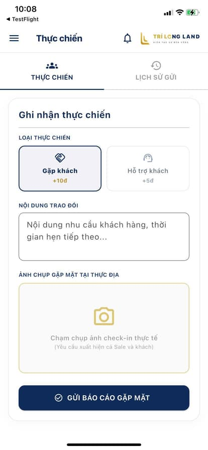
Bài post
Đăng bài về dự án lên Facebook, Zalo hoặc TikTok rồi gửi link để được cộng điểm Lan tỏa.
- Chọn loại: Bài đăng / Story hoặc Video xây kênh.
- Dán link bài viết.
- Dán nội dung caption đã đăng. Caption phải có #trilongland và ít nhất 1 tag phụ như #bds.
- Chọn ảnh chụp màn hình bài đăng.
- Bấm gửi. Bài được duyệt +5.
- Bài phải để chế độ Công khai. Admin mở link không xem được thì không duyệt.
- Không xóa hoặc đăng lại bài sau khi gửi. Đăng lại TikTok là link đổi, link cũ không xem được nữa. Nếu buộc phải đăng lại, gửi lại link mới.
- Nhóm Lan tỏa tối đa 30 điểm/tuần.
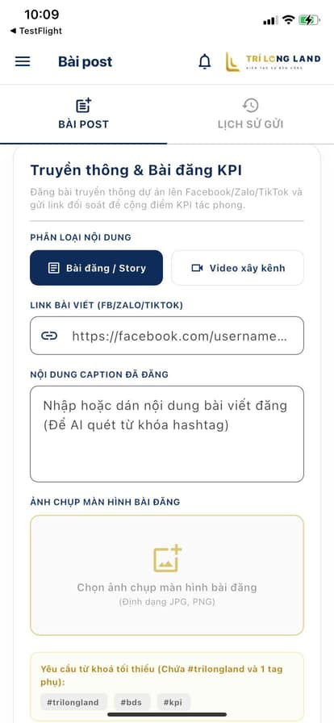
Đào tạo
Menu → Đào tạo. Tab PHÒNG HỌC là lịch đào tạo tuần này, tab KHO VIDEO để xem lại.
Điểm danh buổi học
- Đến lớp, mở tab PHÒNG HỌC, chọn buổi đang diễn ra.
- Quét mã QR đang chiếu trên màn hình lớp học.
- Dự đủ tất cả các buổi bắt buộc trong tuần được +15. Thiếu một buổi là tuần đó không được.
- Tuần công ty không tổ chức buổi nào cũng được +15.
- Điểm chốt sau 23:00 Chủ nhật. Giữa tuần chưa thấy cộng là bình thường.
- Mã QR tự đổi khoảng 30 giây một lần. Báo hết hạn thì quét lại mã đang hiện.
Kho video
Các buổi đã kết thúc và video bài giảng (nếu có). Bấm Xem chi tiết để mở.
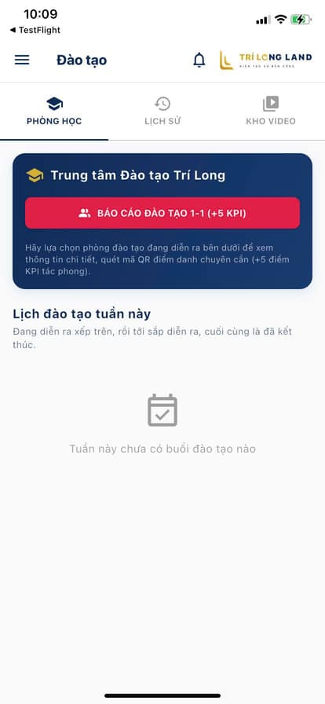
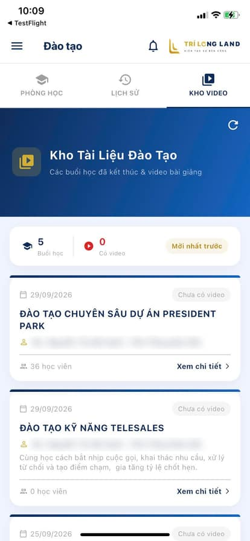
Đào tạo 1-1
Khi bạn kèm một đồng nghiệp. Menu → Đào tạo → nút đỏ BÁO CÁO ĐÀO TẠO 1-1.
- Ghi nội dung đào tạo: kèm ai, trao đổi kiến thức gì.
- Thêm hình ảnh minh chứng: chụp trực tiếp hoặc chọn từ thư viện. Ảnh tự đóng dấu ngày giờ và địa điểm.
- Bấm Nộp báo cáo. Admin duyệt +5 (nhóm Thực chiến).
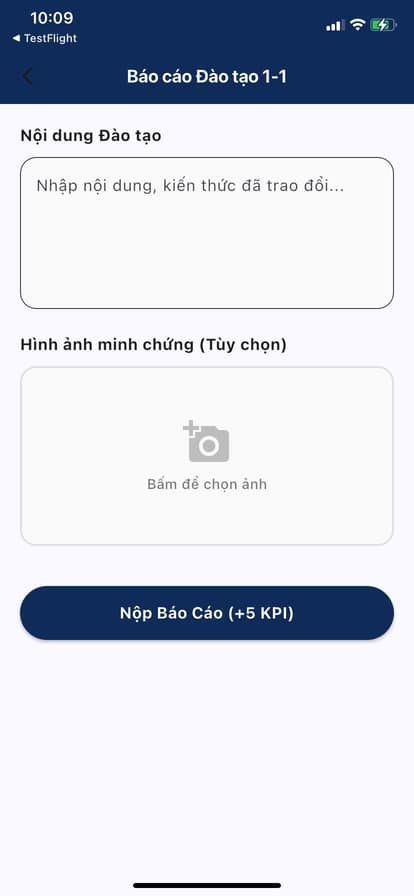
Gieo hạt
Giới thiệu người vào làm công ty.
- Nhập họ tên và số điện thoại người được giới thiệu. Số này sẽ là tài khoản đăng nhập của họ.
- Viết vài dòng giới thiệu thêm: quen thế nào, kinh nghiệm gì.
- Bấm GỬI ĐƠN GIỚI THIỆU. Admin duyệt và mở tài khoản cho người đó.
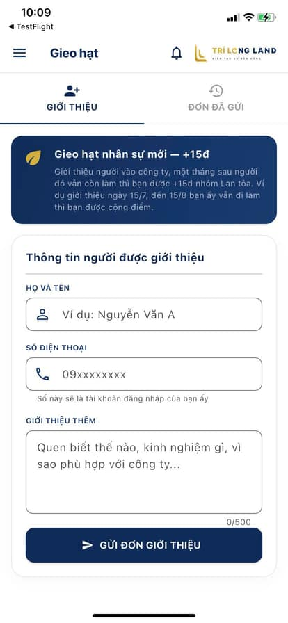
Chốt căn
Khai báo căn đã cọc giữ chỗ để Admin kiểm duyệt.
- Nhập tên và số điện thoại khách mua.
- Nhập dự án, mã căn hộ / block và giá trị giao dịch.
- Bấm ĐĂNG KÝ CHỐT CĂN.
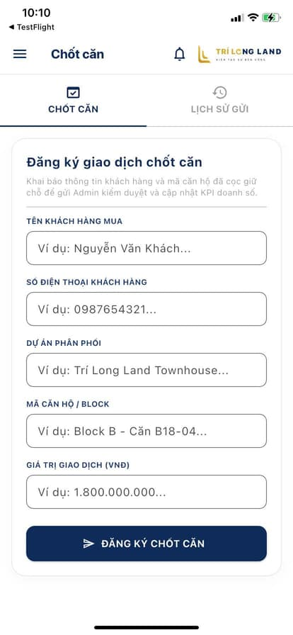
Phản hồi
Khiếu nại chấm công hoặc điểm KPI, báo lỗi app, góp ý. Gửi thẳng đến Ban quản lý.
- Nhập tiêu đề, ví dụ: Khiếu nại chấm công ngày 20/9.
- Chọn danh mục và trình bày nội dung chi tiết.
- Gặp lỗi thì đính kèm ảnh chụp màn hình (tối đa 5 ảnh, chọn Thư viện hoặc Chụp).
- Chọn mức đánh giá rồi gửi. Câu trả lời của Admin hiện ở tab LỊCH SỬ GỬI.
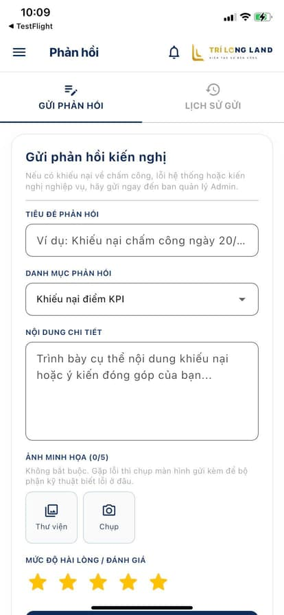
Thông báo điểm
Bấm chuông góc phải, hoặc Menu → Thông báo.
- Chọn Theo tuần hoặc Theo tháng, bấm mũi tên ‹ › để xem tuần/tháng khác.
- Ô trên cùng là tổng điểm của kỳ đang xem, chia theo nhóm.
- Bên dưới là từng khoản cộng/trừ kèm lý do và thời điểm. Nếu nhóm đã 0 điểm, khoản trừ được ghi "không trừ được nữa".
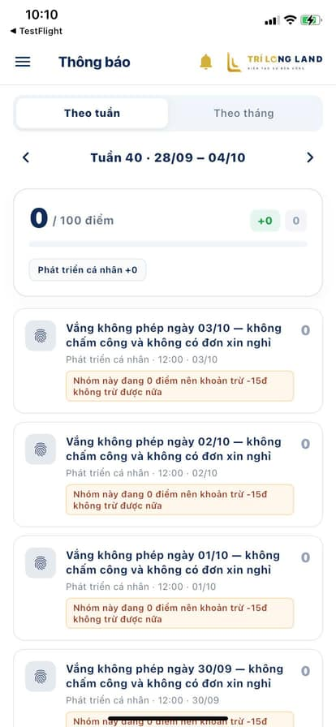
Trang cá nhân
Xem mã nhân viên, phòng ban, số điện thoại và đổi mật khẩu.
- Menu → Trang cá nhân.
- Bấm Đổi mật khẩu, nhập mật khẩu cũ và mật khẩu mới.
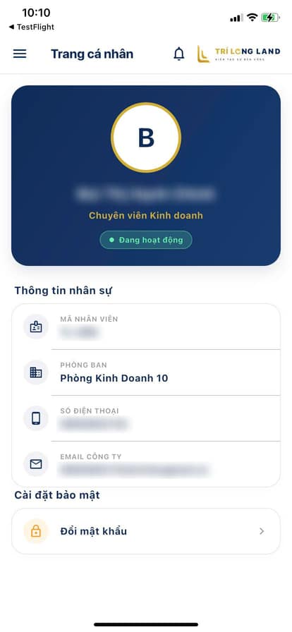
Cập nhật app
Luôn dùng bản mới nhất để không bị lỗi và có đủ tính năng.
Điện thoại Android
- Khi có bản mới, app hiện hộp "Đã có bản …". Bấm Cập nhật.
- Đợi app tải xong, Android hỏi "Bạn có muốn cập nhật ứng dụng này?", bấm Cập nhật.
- Lần đầu Android có thể hỏi "Cho phép cài ứng dụng từ nguồn này": bật lên, quay lại app bấm Cập nhật lần nữa.
Bấm Để sau thì app hỏi lại sau 12 giờ. Cập nhật không làm mất dữ liệu hay đăng nhập.
iPhone
Mở app TestFlight, bấm Cập nhật ở dòng Trí Long Land.
Lỗi thường gặp
Bấm chụp ảnh báo lỗi camera hoặc "chưa cho phép dùng camera"
Lúc cài app bạn đã bấm "Không cho phép" khi máy hỏi quyền camera. iPhone chỉ hỏi một lần, nên phải tự bật lại:
- Vào Cài đặt điện thoại → kéo xuống chọn Trí Long Land → bật Camera.
- Trong đó kiểm tra luôn Vị trí: chọn "Khi dùng ứng dụng" và bật "Vị trí chính xác"; Ảnh: chọn "Tất cả ảnh".
- Quay lại app, chụp lại. Bản app mới có nút Mở Cài đặt đưa thẳng tới trang này.
Đang ở văn phòng mà app báo ngoài phạm vi
- Bật định vị ở chế độ chính xác cao, bật Wi-Fi (giúp định vị chuẩn hơn).
- Ra gần cửa sổ, đợi vài giây rồi thử lại.
- Vẫn báo ngoài phạm vi thì ghi lý do và gửi yêu cầu xét duyệt, Admin sẽ duyệt.
App báo đang dùng vị trí giả
Tắt hoặc gỡ các ứng dụng giả vị trí (Fake GPS…). Trên Android, vào Tùy chọn nhà phát triển và bỏ chọn "ứng dụng vị trí mô phỏng". Sau đó mở lại app.
Quét QR đào tạo báo mã hết hạn
Mã đổi khoảng 30 giây một lần. Quét lại mã đang hiện trên màn hình lớp học.
Bài TikTok/Facebook bị từ chối vì không xem được
Kiểm tra bài để chế độ Công khai và chưa bị xóa. Nếu đã đăng lại, link mới khác link cũ: gửi lại bài với link mới.
Đã đi học đủ mà chưa thấy điểm đào tạo
Điểm đào tạo chốt sau 23:00 Chủ nhật cho cả tuần. Sáng thứ Hai mở Thông báo để xem.
Quên chấm công hoặc chấm nhầm vào/ra
Gửi Phản hồi danh mục khiếu nại chấm công, ghi rõ ngày, giờ thực tế, kèm ảnh nếu có.
Đầu tháng thấy điểm tháng về 0
Tháng KPI mới bắt đầu từ thứ Hai đầu tiên của tháng. Những ngày đầu tháng trước thứ Hai đó vẫn tính cho tháng trước.
Không gửi được, app báo lỗi mạng
Kiểm tra Wi-Fi hoặc 4G rồi thử lại. Báo cáo Thực chiến được giữ lại và tự gửi khi có mạng. Lỗi kéo dài thì chụp màn hình gửi Phản hồi danh mục báo lỗi.